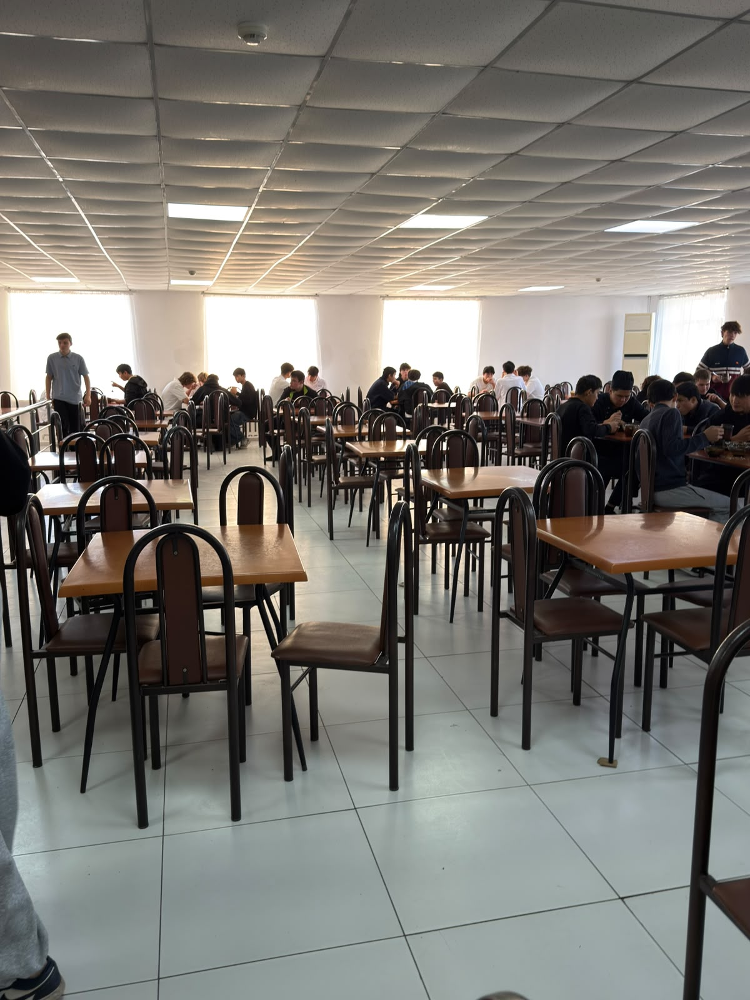
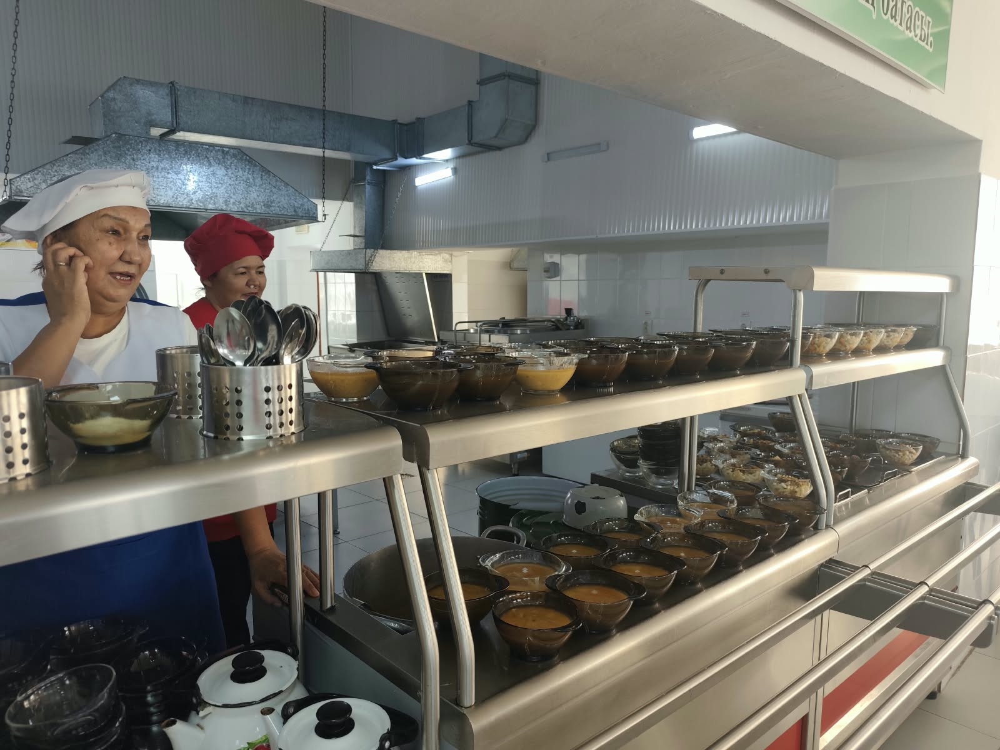
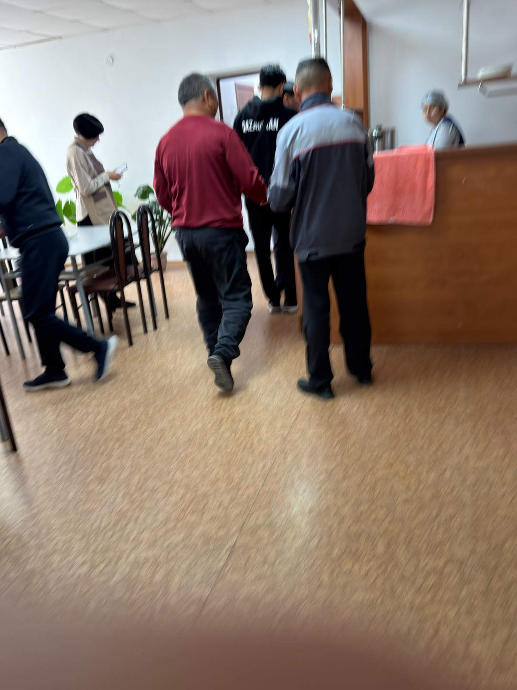
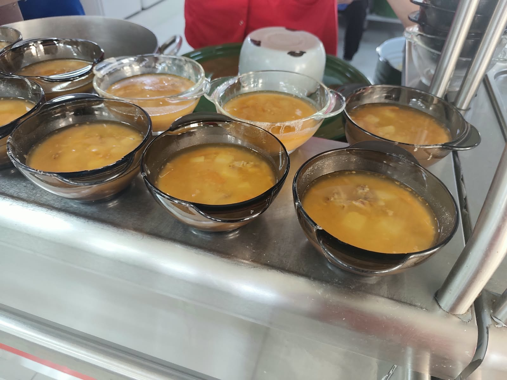

В этом проекте рассказывается о столовой колледжа, приготовлении еды, кухонном оборудовании и выдаче готовых блюд.
Посмотреть проектМесто, где студенты обедают во время учебного дня

В столовой есть места для приготовления и хранения продуктов, выдачи еды и обеденного зала.
Студенты выбирают готовые блюда, выпечку, салаты и напитки на линии раздачи.
Столовая помогает студентам удобно пообедать в течение учебного дня.
От подготовки продуктов до обеда
Продукты проверяют, моют и готовят к обработке.
Готовят супы, гарниры, горячие блюда и выпечку.
Готовые блюда ставят на линию выдачи.
Студент получает порцию и садится за стол.
На кухне используют плиты, духовки, холодильники, рабочие столы и другое оборудование.
С его помощью можно готовить много порций и поддерживать порядок в работе.

Порядок обслуживания
Студент подходит к линии, выбирает блюдо и получает порцию у сотрудника.
После этого проходит в зал и обедает за столом.

Видео и звуковая дорожка внутри страницы
Включите звуковую дорожку:
Фотографии столовой и готовых блюд

Меню на сайте приведено для примера и не является официальным меню колледжа.